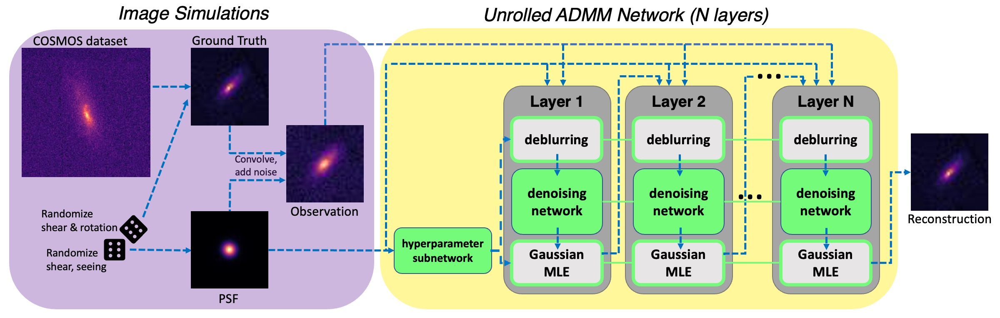
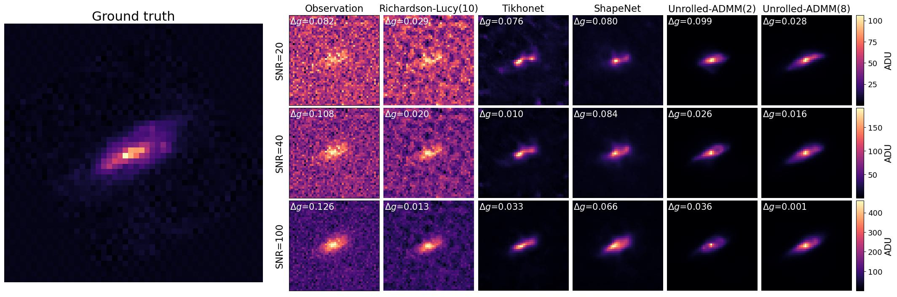

Galaxy Image Deconvolution for Weak Gravitational Lensing
with Unrolled Plug-and-Play ADMM
Monthly Notices of the Royal Astronomical Society: Letters
-
Anshuman Sinha
Tsinghua University -
Emma Alexander
Northwestern University

Figure 1. Overview of the image processing pipeline.
Abstract
Removing optical and atmospheric blur from galaxy images significantly improves galaxy shape measurements for weak gravitational lensing and galaxy evolution studies. This ill-posed linear inverse problem is usually solved with deconvolution algorithms enhanced by regularisation priors or deep learning. We introduce a so-called "physics-informed deep learning" approach to the Point Spread Function (PSF) deconvolution problem in galaxy surveys. We apply algorithm unrolling and the Plug-and-Play technique to the Alternating Direction Method of Multipliers (ADMM), in which a neural network learns appropriate hyperparameters and denoising priors from simulated galaxy images. We characterise the time-performance trade-off of several methods for galaxies of differing brightness levels as well as our method's robustness to systematic PSF errors and ablations. We show an improvement in reduced shear ellipticity error of 38.6% (SNR=20)/45.0% (SNR=200) compared to classic methods and 7.4% (SNR=20)/33.2% (SNR=200) compared to modern methods.

Figure 2. An illustration of performance at multiple SNR levels.
Citation
@article{li2023galaxy,
title={Galaxy image deconvolution for weak gravitational lensing with unrolled plug-and-play ADMM},
author={Li, Tianao and Alexander, Emma},
journal={Monthly Notices of the Royal Astronomical Society: Letters},
volume={522},
number={1},
pages={L31--L35},
year={2023},
publisher={Oxford University Press}
}
Press Release
Read about this work on Northwestern Now, Northwestern Engineering Magazine, Popular Science, The Register, and Innovation News.
Acknowledgements
We would like to thank Adam Miller, Jason Wang, Keming Zhang, Nick Antipa, and an anonymous reviewer for their valuable advice, and the Computational Photography Lab (esp. Aniket Dashpute) at Northwestern University for support of computational resources.
Website template from Michaël Gharbi.